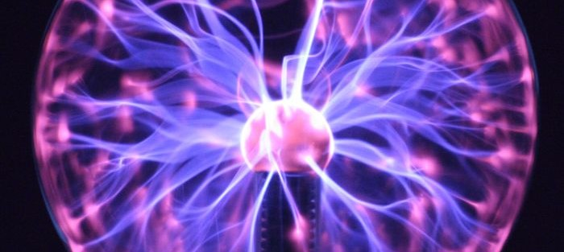
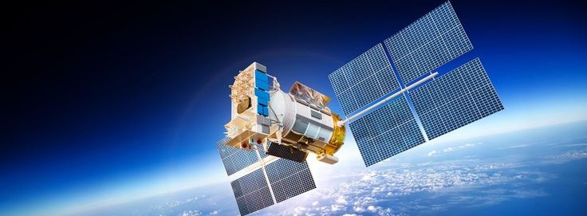

Científico Favorito
Mi científico favorito es el Ingeniero Nikola Tesla, aunque no fuera un científico como tal, realizaba
hipótesis de toda clase y posteriormente recreaba su hipótesis con sus experimentos, que en la
actualidad muchos de ellos han sido cruciales para el desarrollo del humano como lo conocemos
hoy en día, pionero de la corriente alterna, fue de los primeros en controlar un dispositivo con un radiocontrolador, es decir
controlar dispositivos a distancia, estuvo muy metido en el área de rayos x, fue de los primeros en
desarrollar la energía inalámbrica por medio de campos magnéticos de altas frecuencias.
Rama favorita
Mi rama favorita de la ciencia es todo lo que se relacione con la electrónica, la manipulación de los
átomos para generar una corriente eléctrica, se podría decir que el subtema que más me interesa
entre todos son los campos magnéticos, me parece increíble que la energía eléctrica que
utilizamos todos los días no solo corran por los conductores, sino que también se transmiten por
medio de un campo magnético. No existe campo magnético sin corriente eléctrica y no existe
corriente eléctrica sin el campo magnético, esto siempre me deja pensando.

Descubrimiento Favorito
Mi descubrimiento favorito sin duda es el poder compartir información a grandes distancias o
incluso inalámbricamente, me parece impresionante como es que el humano pudo conectar cables
gigantescos a lo largo de los océanos o la comunicación por medio de los satélites artificiales,
simplemente una aplicación como bluetooth es sumamente complejo, ya me imagino lo demás que
ha realizado el humano en este área.
